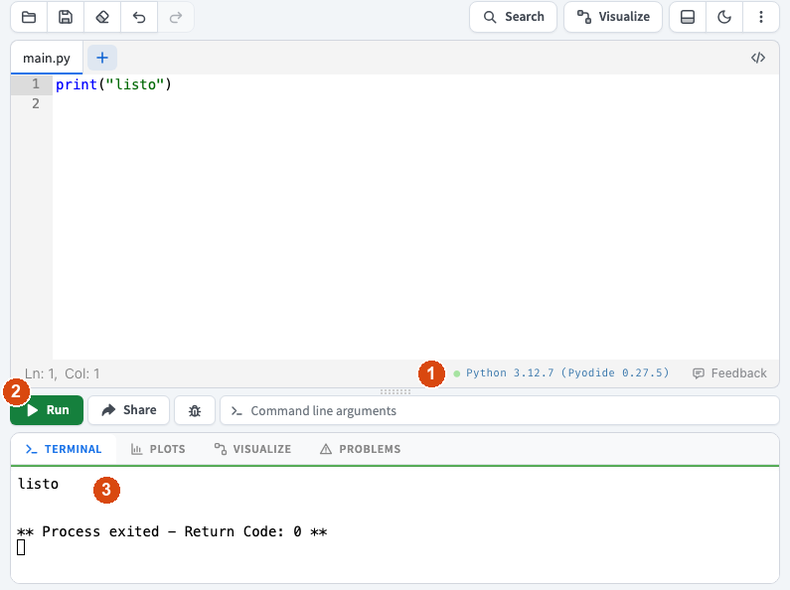
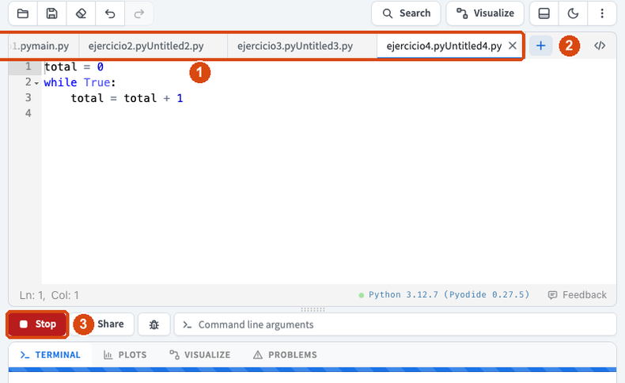
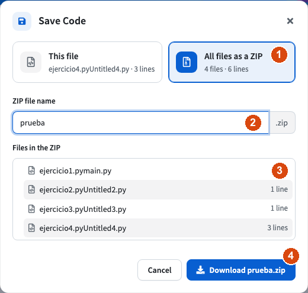

Un editor solo para la prueba
La prueba práctica se hace en el aula y, mientras dura el examen, no puedes tener internet. Por eso, solo para la prueba, usaremos online-python.com/pyodide, una versión del editor de siempre. Se abre con internet y, una vez preparada, sigue funcionando sin conexión. Tiene los mismos botones y la misma TERMINAL.
Prepara el editor
Abre online-python.com/pyodide, escribe print("listo") y pulsa Run. La primera vez tarda un poco, porque el navegador está cargando Python.

Ampliar- Pyodide: abajo, a la derecha del editor, tiene que poner
Pyodide. Si no lo pone, estás en el editor de siempre, que sin internet no funciona. - Run: ejecuta el programa de la pestaña que tienes abierta, como siempre.
- TERMINAL: cuando sale
listo, el editor ya está preparado. En la prueba, cortaré internet en ese momento.
No recargues la página
Sin internet, la página no vuelve a cargar. No la recargues ni cierres la pestaña. Si el navegador te pregunta si quieres salir, elige quedarte. Si te quedas sin editor, avísame: tus ejercicios no se pierden y vuelven a aparecer cuando regresa internet.
Un ejercicio en cada pestaña
Igual que en las tareas, cada ejercicio va en su pestaña.

Ampliar- Las pestañas: haz doble clic en
main.pyy cámbiale el nombre porejercicio1.py. - El botón +: crea la pestaña siguiente. Escribe su nombre y pulsa Enter:
ejercicio2.py,ejercicio3.pyyejercicio4.py. - Stop: mientras un programa está en marcha, el botón Run se convierte en Stop. Si tu programa no termina, por ejemplo por un bucle infinito, púlsalo. Aquí no hay que recargar la página.
Mientras trabajas no hace falta descargar nada: tus pestañas se quedan en el editor.
Entrega al terminar
Cuando te avise, ya con internet, pulsa el disquete de arriba:

Ampliar- Marca All files as a ZIP.
- Escribe el nombre:
prueba(el.ziplo añade solo). - Comprueba que están los cuatro archivos.
- Pulsa Download y sube
prueba.zipa su tarea de Google Classroom.
Sin internet, el ZIP no se descarga. Si pulsas Download y no pasa nada, espera a que vuelva la conexión y pulsa otra vez.
No apagues ni reinicies el ordenador
Los ordenadores del aula borran todo lo guardado cada vez que se reinician. Hasta que hayas entregado tu ZIP, no apagues el ordenador, no lo reinicies y no cierres la sesión.
Lo que cambia respecto al editor de siempre
| Editor de siempre | Editor de la prueba | |
|---|---|---|
| Dirección | online-python.com | online-python.com/pyodide |
| Botones y TERMINAL | Run, disquete y TERMINAL | Los mismos |
| Un programa que no termina | Recargar la página | Botón rojo Stop |
| Internet | Hace falta todo el tiempo | Solo para abrirlo al empezar y para entregar |
Los mensajes de error son los mismos. Solo cambian dos detalles: donde iría el nombre del archivo pone <exec>, y a veces no salen las flechitas ^. Busca el número de línea y lee la última línea, como siempre.
Cómo es la prueba práctica
Antes de empezar, que no te pille de sorpresa
- Son cuatro ejercicios cortos, de lo que has practicado en las tareas: pedir datos y hacer cuentas, un
if, unfory unwhileque va sumando. - Puedes tener delante la Chuleta de Python impresa, y nada más.
- Cada ejercicio va en su pestaña:
ejercicio1.py,ejercicio2.py,ejercicio3.pyyejercicio4.py. Se entregan juntos enprueba.zip. - Un ejercicio que no funciona del todo también puntúa si la idea está bien: entrega siempre lo que tengas.
Para practicar tienes un ensayo de la prueba (PDF) con cuatro ejercicios del mismo tipo (un if, un for y un while que va sumando, entre ellos) y sus soluciones al final. Intenta cada uno antes de mirar la solución.